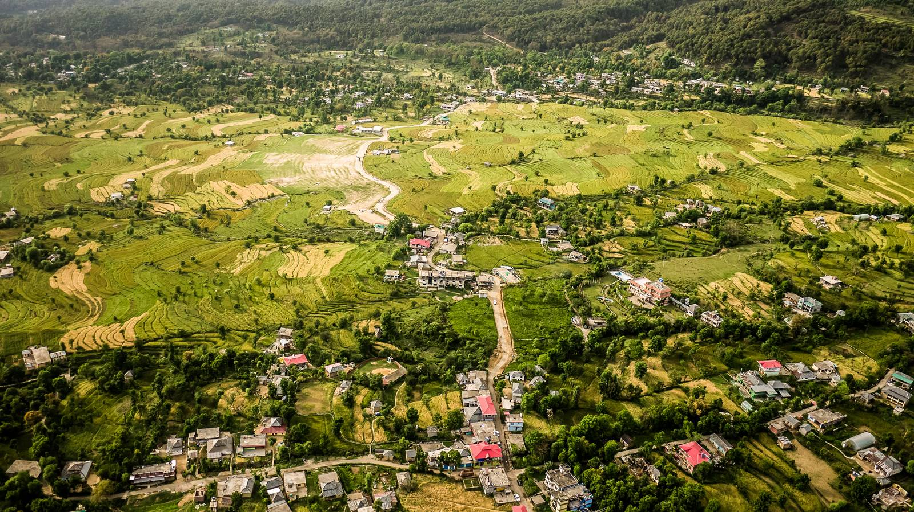
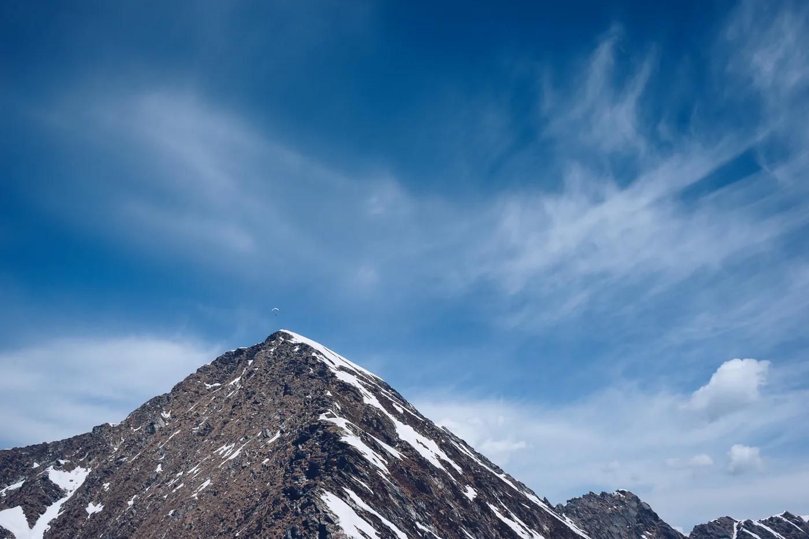
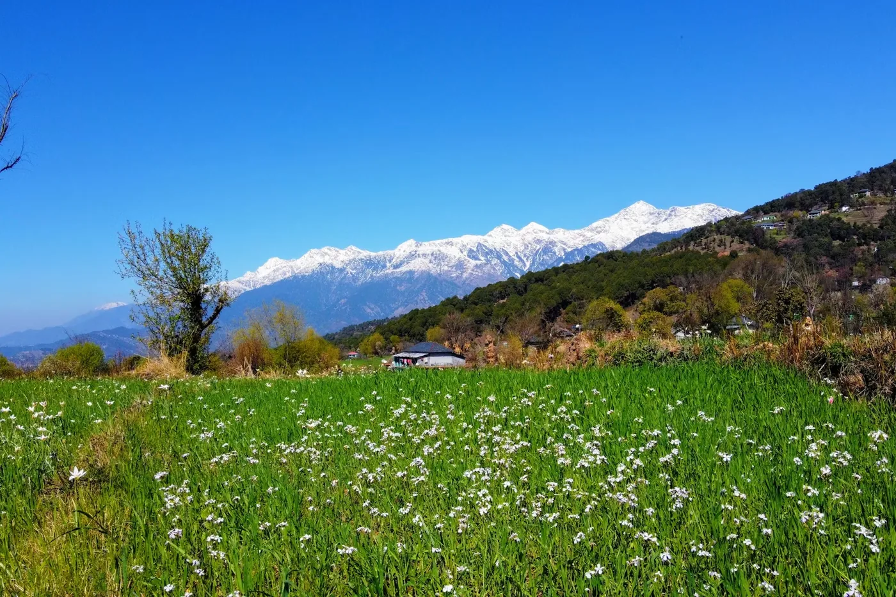

01
Indien-Tour 1
bis 2027
Durchführung garantiert6 Plätze
Pro Pilot£1.100
Platz reservieren
Fliegen im Hochgebirge. Zehn Tage am Dhauladhar, der Wand des Himalaya über Bir.
Fliegen im Hochgebirge ab Bir Billing


von der Wiese in Billing starten,
an den Kuppen des Dhauladhar hochkurbeln und nach Westen Richtung Dharamshala fliegen,
dann bei schwindendem Licht Kurs auf Bir nehmen.
3 bis 3,6 km an der Vorkette,
Oktober bis November.
Unsere Himalaya-Expedition schenkt dir ein Flugerlebnis, bei dem du über Landschaften schwebst, die von Zeit und Legenden geformt wurden: Du gleitest über uralte Klöster und lotest in dünner Luft deine Grenzen aus. Eine Reise, die die Seele bewegt. In Bir geht es los: ein Startplatz in Billing, ein Landeplatz am Ortsrand und eine Vorkette, an der Piloten seit den 1980er Jahren hin und zurück fliegen.
Jeder Flugtag beginnt auf der Wiese in Billing, oberhalb von Bir. Am Startplatz herrscht fast immer Nullwind, deshalb ist ein sauberer Vorwärtsstart ohne Hilfe vom Wind die eine Fähigkeit, die du mitbringen solltest,
Der Plan richtet sich nach den Bedingungen, nicht nach einem Zeitplan. Am Boden hat Bir einen Kilometer Straße mit rund hundert Restaurants, Wanderwege, heiße Quellen und Klöster, in denen du beim Gesang dabeisitzen kannst.
Eddie Colfox erinnert sich, dass die Luft Ende Oktober zu stabil wurde, um viel höher als 2.800 m zu steigen. Heute zieht sich der Monsun bis in die erste Oktoberwoche, und die Luft bleibt bis in den November hinein labil genug, um deutlich über 3.000 m zu steigen. Als er Mitte November von Bir aus flog, war er am vorderen Grat auf 3.600 m und tief in den hinteren Ketten auf 5.800 m.
Eddie Colfox, Indien-FolgeDer Herbst ist die Saison. Eddie Colfox setzt den Beginn des guten Fliegens heute um den 10. Oktober an, später als früher, und es geht bis weit in den November. Jigish Gohil, der in Bir lebt, sagt, im Herbst kommen fast alle, weil man fast jeden Tag zuverlässig fliegen kann. Auch im Frühling wird geflogen, aber es ist stärker und viel ruhiger. Am Flugtag selbst betreibt Jigishs eigene Seite paraguide.in eine Live-Wetterstation für Bir Billing.
Jigish Gohil, Bir-FolgeDas Fliegen vor dem Startplatz ist der Teil wie aus dem Lehrbuch: Landeplätze das ganze Tal entlang, eine Straße nie weit weg und Gänsegeier, die die Bärte markieren. Läuft der Tag schief, landest du, nimmst den Rückholdienst und fährst nach Hause.
Die meisten Tage enden wieder in Bir. Wenn nicht, teilen sich die Piloten über ihre WhatsApp- und Telegram-Gruppen Taxis, meist vier Piloten in einem kleinen Auto, und über dasselbe Netzwerk kommen morgens alle wieder den Berg hinauf.
Hinter dem Startplatz liegt ein Grat, und dahinter legt alles auf einmal zu: Höhe, Thermikstärke, Turbulenz und Kälte, nach Eddie Colfox' Einschätzung um etwa ein Drittel. Das ist ein späterer Schritt, keiner für die erste Woche.
Im Herbst 2023 kamen rund 800 Gastpiloten nach Bir, gegenüber etwa 200, als Jigish Gohil zum ersten Mal kam. Der Verkehr in der Luft ist jeden Morgen Thema im Briefing, und wir halten die Gruppe über Funk zusammen.
Wir sehen unsere Kunden nicht als Kunden, sondern als Freunde und Mitträumer. Piloten, die wie wir das Erkunden neuer Horizonte zur Priorität gemacht haben. Das heißt: Wir lassen keine Thermik ungeprüft, um dir zu helfen, eine persönliche Bestleistung zu erreichen oder einfach den Flug deines Lebens zu erleben
Wir kennen das Gefühl von Touch The Sky With Glory, und es ist unser Traum, es mit dir teilen zu können

Aninders eigene Aufnahmen aus Bir, drei Sekunden entlang des Dhauladhar. Scrollen spult sie vor und zurück. Nichts läuft von selbst.

Anflug aus 69 km Weite über das Kangra-Tal, hinunter nach Billing, westwärts an der Vorkette entlang nach Dharamshala, zurück nach Osten bis 360 und über den Grat nach hinten. Beim Scrollen fliegt die Karte die Route ab, oder du übernimmst die Steuerung und fliegst, wohin du willst.
Ein Startplatz, ein Landeplatz und eine Vorkette, die in beide Richtungen über Dutzende Kilometer trägt. Die Tour folgt den Bedingungen statt einem Zeitplan; so sehen die Tage meistens aus.
etwa 2.400 m
Der Standardtag und die Strecke, auf die Eddie Colfox einen weniger erfahrenen Piloten schicken würde: westwärts an der Vorkette entlang nach Dharamshala und zurück, mit großen Landewiesen und unkompliziertem Rückholdienst auf dem ganzen Weg. Nach seiner Erzählung flogen Piloten sie schon 1988 hin und zurück. Hör, was er dazu sagt.
Nach Westen, 80 bis 90 km hinaus und zurück
Ist Dharamshala geschafft, ist sein nächster Schritt, am Startplatz vorbei zurück nach Osten bis 360 zu fliegen und dann wieder heim. Dieselbe Vorkette, dieselben Landeplätze, nur mehr davon.
Nach Osten, der größere Tag
Hinter Billing liegt ein Grat, und dahinter die großen Berge: Barabangal, die Strecke nach Manali und weiter. Jigish Gohils Maßstab dafür sind ein paar hundert Flugstunden, ein SIV-Kurs sowie Ausrüstung und Fitness für eine Nacht draußen und einen langen Fußmarsch. Sein Maßstab im Detail.
Nach Norden, keine Strecke für die erste Woche






Der Boden besteht aus offenen Geländedaten mit 19 m Auflösung (AWS Terrain Tiles, Mapzen Terrarium, aus SRTM und anderen offenen Quellen), live als Relief gezeichnet, beim Scrollen abgeflogen oder von Hand bewegt; die Pins sind die Bir-Wegpunkte, mit denen Piloten fliegen (Indian XC League), und die Orte sind nach GeoNames gesetzt (CC BY 4,0). Ein mit „bei“ markiertes Foto ist nach seiner Bildunterschrift platziert, nicht nach einer GPS-Position. Die gezeigten Flüge sind echte Tracklogs, gewertet nach den XContest-Regeln: Die Distanz ist die gewertete Strecke, die gestrichelte Linie ist diese Strecke, und die Durchschnittsgeschwindigkeit ist die gewertete Distanz geteilt durch die Flugzeit. Die Fotos der Sehenswürdigkeiten stammen von Wikimedia Commons, jeweils dort, wo sie erscheinen, mit Urheber und Lizenz genannt.


Entlang der Vorkette
Dhauladhar, IndienVier Termine mit je zehn Tagen und neun Nächten in Bir, sechs Piloten pro Termin.
bis 2027
Durchführung garantiert6 Plätze
Pro Pilot£1.100
Platz reservierenbis 2027
Durchführung garantiert6 Plätze
Pro Pilot£1.100
Platz reservierenbis 2027
Durchführung garantiert6 Plätze
Pro Pilot£1.100
Platz reservierenbis 2027
Durchführung garantiert6 Plätze
Pro Pilot£1.100
Platz reservieren„Platz reservieren“ sendet eine Anfrage für diesen Termin. Alle vier Termine finden garantiert statt: Wir sagen keinen davon wegen zu geringer Teilnehmerzahl ab. Was bei der Buchung fällig ist, steht in unseren Buchungsbedingungen.
Wer führt
Aninder machte als Kind im Vorgebirge des Himalaya seinen ersten Tandemflug und fliegt seit mehr als zehn Jahren. Er gründete Paragliding Atlas 2023, ist selbst in Bir geflogen und moderiert den Podcast, darunter die beiden Bir-Folgen, auf denen diese Seite aufbaut.
Gurpreet fliegt seit 1993 und war der erste Inder mit einer BHPA-Fluglehrerlizenz. Er gründete 2002 die Flugschule PG Gurukul, heute in Bir ansässig, die 2025 als erste Gleitschirmschule Indiens vom Aero Club of India akkreditiert wurde. Er stand als erster Inder auf dem Podium eines internationalen Wettbewerbs der offenen Klasse, ist bei 69 internationalen Wettbewerben geflogen und hat an Indiens Sicherheitsregeln und Pilotenstufen fürs Gleitschirmfliegen mitgeschrieben. 2026 verlieh ihm die FAI das Paul Tissandier Diploma.
Ein Guide auf je drei Piloten, nie mehr.
[to supply]
Eddie Colfox leitet seit 2007 Reisen ab Bir. Er erzählt, wie sich die Saison verschoben hat, welche Routen es entlang der Vorkette gibt und was sich ändert, sobald du über den Grat nach hinten fliegst.
Die zehn Fragen, die jedes Mal kommen. Ist deine nicht dabei, stell sie im Gespräch. Mehr über Bir von unseren Gästen findest du in Flying Abroad in der Wissensdatenbank.
Im Herbst. Eddie Colfox, der seit 2006 in Bir fliegt, setzt den Beginn des guten Fliegens heute um den 10. Oktober an, weil der Monsun oft bis in die erste Woche des Monats hineinreicht und die Luft bis weit in den November labil genug bleibt, um über 3.000 m zu steigen. Unsere Herbsttermine, 21.–30. Okt. und 3.–12. Nov. 2027, liegen in diesem Fenster; die beiden Frühlingstermine, 15.–24. Apr. und 25. Apr. – 4. Mai 2027, liegen davor. Eddie über die Saison.
IPPI 2 oder gleichwertig, wie bei unserer Kenia-Tour, und du solltest selbstständig fliegen: Starten, Kreisen in der Thermik, Entscheiden und Landen, alles allein. Übe vor allem Starts bei Nullwind, bevor du kommst, denn in Billing hilft dir der Wind selten. Eddie Colfox zählt einen Piloten mit 100 bis 300 Stunden hier noch als Anfänger, und sein Rat ist, mit einer erfahrenen Gruppe zu fliegen.
Fliegen im Hochgebirge kostet £1.100 pro Pilot für die zehn Tage, bei jedem Termin gleich, geführt von Aninder Singh und Gurpreet Dhindsa mit einem Guide auf je drei Piloten. Im Preis enthalten sind die Betreuung, der tägliche Transport hinauf nach Billing und zurück, der Rückholdienst und die Startgebühren. Internationale Flüge, Visum und Versicherung organisierst du selbst. Alle vier Termine finden garantiert statt.
Flieg nach Delhi, nimm dann einen Inlandsflug nach Dharamshala, aufgeführt als Kangra oder Gaggal, und ein Taxi von etwa zwei Stunden nach Bir. Jigish Gohil, der in Bir lebt, hält den Volvo-Nachtbus ab Delhi für die günstigste und einfachste Möglichkeit, mit Sitzen, die sich weit genug zum Schlafen zurücklehnen lassen. Auch die Flughäfen Chandigarh und Amritsar gehen, mit einer längeren Fahrt am Ende.
Bürger der meisten Länder können das e-Tourist-Visum für Indien online beantragen, aber nicht alle, also prüf das für dein Land auf dem offiziellen Portal. Beantrage es mindestens vier Tage vor der Ankunft; da unser erster Termin am 15. April beginnt, solltest du das nicht auf den letzten Drücker machen. Seit Oktober 2025 füllt außerdem jeder ausländische Besucher in den 72 Stunden vor dem Flug online eine kostenlose e-Arrival Card aus.
Deinen eigenen zertifizierten Schirm, ein Gurtzeug mit Rückenprotektor, Rettungsgerät, Helm, Vario oder GPS und ein Funkgerät. Bring einen Schirm mit, auf dem du entspannt fliegst, nicht deinen heißesten: Eddie Colfox rät zu guter Ausrüstung, auf der du dich wohlfühlst. Im Tal ist es warm und an der Wolkenbasis eiskalt, also pack eine Daunenjacke und Handschuhe ein, die du schon in ruhiger Luft getestet hast. Die vollständige Liste steht unten.
Prüf das vor dem Packen. Manche Satelliten-Kommunikationsgeräte sind in Indien rechtlich gesehen nicht erlaubt, und nicht alle Hinweise im Netz sind auf dem neuesten Stand. Eddie Colfox hält irgendeine Art von Sender trotzdem für unverzichtbare Sicherheitsausrüstung und sagt das offen, aber an die Regeln musst du dich selbst halten. Frag uns bei der Buchung nach deinem Gerät, damit du es vor der Reise erfährst und nicht erst beim Zoll.
Eine Reiseversicherung, die Gleitschirmfliegen in Indien bis mindestens 4.000 m abdeckt, einschließlich Bergung, medizinischer Behandlung und Rücktransport. Kläre vor der Reise mit deinem Versicherer, dass er dort auch wirklich zahlt, denn Schadensfälle aus Indien können langsam und kompliziert sein. In unserer Folge mit Jigish Gohil wartete ein versicherter Pilot, der etwa 15 km vom Startplatz entfernt abgestürzt war, trotzdem bis zum nächsten Tag auf den Hubschrauber.
Voll. Jigish Gohil zählte im Herbst 2023 etwa 800 Gastpiloten, gegenüber etwa 200, als er ankam, weil fast nirgendwo sonst zu dieser Jahreszeit so zuverlässig geflogen wird. Die Vorkette ist breit genug, um sich zu verteilen, und sein Rat ist, die Hausthermik zu verlassen, sobald du die Höhe für den nächsten Grat hast. Der Frühling ist ruhiger, mit rund 100 Piloten, aber stärker.
Eine Anzahlung sichert deinen Platz, der Restbetrag ist 120 Tage vor Abreise fällig; buchst du später, ist bei der Buchung der volle Preis fällig. Stornierst du danach, fällt eine Rücktrittsentschädigung an: der Preis abzüglich dessen, was wir einsparen, und abzüglich dessen, was wir durch den Weiterverkauf deines Platzes einnehmen, und wir zeigen dir die Rechnung. Deshalb legen wir dir eine Reiserücktrittsversicherung so dringend ans Herz. Alle Details in den Buchungsbedingungen.
Uns ist lieber, du liest das hier und entscheidest, dass es nichts für dich ist, als dass du es erst vor Ort merkst.
Fliegen im Hochgebirge ist für selbstständige Piloten gemacht, die den Himalaya von seiner zugänglichsten Seite erleben wollen und dafür gern den Himmel mit anderen teilen.
Bir gilt als der einfache Himalaya, und in der Luft wird es dem meist gerecht. Was Piloten kalt erwischt, ist alles rund ums Fliegen: ein Start bei Nullwind mit einer Schlange hinter dir, eine Hausthermik voller Schirme und ein langer Anflug auf einen vollen Landeplatz.
Wie ein Tag abläuft
Die Vorhersage, der Plan und der Verkehr in der Luft: wo die Bärte wahrscheinlich stehen, in welche Richtung es geht und was zu tun ist, wenn der Tag früh zumacht.
Geteilte Taxis hinauf nach Billing, etwa 45 Minuten von Bir, so wie es alle machen, meist vier Piloten pro Auto.
Am Startplatz herrscht fast immer Nullwind, und es wird eine Schlange geben. Leg seitlich aus, und sobald dein Schirm oben ist, starte.
Verlass die Hausthermik, sobald du die Höhe für die nächste Kuppe hast. Die Vorkette trägt in beide Richtungen über Dutzende Kilometer, du musst also nicht im Pulk bleiben.
Die meisten Tage enden wieder in Bir. Such dir früh dein Landefeld aus, flieg eine vollständige Landeeinteilung, und landest du woanders, achte auf Terrassen und Stromleitungen.
Für Piloten, die auf eigene Faust nach Bir reisen statt mit unserer Tour. Nichts davon ist speziell auf uns bezogen, und alles davon lohnt die Lektüre, bevor du dort mit wem auch immer fliegst.
Das Wetter in Bir ist der einfache Teil. Worüber die Piloten dort reden, ist der Verkehr in der Luft, und die Unfälle, die sie schildern, passieren im Verkehr. Das meiste stammt aus zwei unserer eigenen Folgen, mit Eddie Colfox, der seit 2007 Reisen ab Bir leitet, und mit Jigish Gohil, der seit etwa zehn Jahren dort lebt. Ihre Worte sind sinngemäß wiedergegeben, nicht zitiert.
Bir ist nicht der Ort, um herauszufinden, was dein neuer Hochleister am Nachmittag macht. Das Fliegen ist eher lang als schwierig, und Spaß daran haben die Piloten, die nicht damit beschäftigt sind, ihren Schirm zu managen.
Nicht die beste Ausrüstung, sagt er, sondern gute Ausrüstung, auf der du dich wohlfühlst: ein Schirm, der so ruhig ist, dass du beim Fliegen gern ein Foto machen würdest.
Sag jeden Tag vor dem Start, wohin du fliegst und mit wem. Und melde dich abends wieder zurück. Das meiste, was hier schiefgeht, überlebt man; sechs Stunden vermisst zu sein, bevor es jemand merkt, macht daraus erst eine Rettungsaktion.
Sag deinen Freunden, was du für den Tag vorhast, flieg wenn möglich mit einem Kumpel, trag irgendeine Form von Tracking bei dir, und gib abends Bescheid, wenn du gelandet bist.
Das ist der Teil, den die Prospekte weglassen. Die Thermik, die Bir so einfach macht, ist dieselbe Thermik, in der alle anderen auch kreisen, und im Herbst kommen alle.
Als er zum ersten Mal für eine Herbstsaison kam, flogen dort etwa 200 Piloten aus aller Welt. Im Herbst 2023 waren es etwa 800.
Steig außen ein, übernimm die etablierte Drehrichtung und lass Abstand. Die Zusammenstöße in der Luft, die Jigish Gohil beschreibt, kamen von Piloten, die falsch herum kreisten, zu dicht aufschlossen oder nicht schauten, wohin sie flogen.
Wird dir der Kreis zu eng, flieg weiter zum nächsten Grat. An jeder Kuppe entlang der Vorkette steht eine Thermik.
In Bir gibt es außergewöhnliche Piloten, und manche von ihnen machen Dinge, die du nicht nachmachen solltest. Eine Linie, die für einen Einheimischen auf einem Zweileiner funktioniert, ist nicht automatisch eine Linie für dich.
Geh nicht davon aus, dass der Pilot vor dir weiß, was er tut. Manche Piloten in der Luft über Bir sind hervorragend, und manche wissen es einfach nicht besser.
Im Herbst kann es in Bir überentwickeln. Am 17. Okt. 2024 wurde ein Gastpilot gegen Ende eines langen Flugs in einer Gewitterwolke in etwa zehn Minuten von 3.000 m auf über 7.000 m gerissen und überlebte; an diesem Tag wurden in der Gegend neun Zwischenfälle gemeldet, darunter drei Rettungsschirmöffnungen. Cross Country hat darüber berichtet.
Achte darauf, wie schnell sich die Wolken aufbauen, bleib unter den großen weg und lande lieber früh als spät.
Sei sehr vorsichtig mit den Wolken. An einem großen Tag fliegt er lieber nach Süden hinaus, weg von den Bergen, als in einem Talsystem, in dem man festsitzen kann, unter großen Wolken zu hängen.
Der Landeplatz Bir ist groß, grasig und voll, und genau deshalb verletzen sich dort Leute. Machst du anderswo eine Außenlandung, werden Terrassen und Stromleitungen zur Hauptgefahr, und die sieht man erst spät: Schau dich weiter um, bis deine Füße auf dem Boden sind.
Egal wie groß der Landeplatz ist: Piloten verschätzen sich im Endanflug, kommen zu lang an, lassen den Schirm dann aus drei oder vier Metern Höhe abreißen und brechen sich etwas.
Hinter der Vorkette wird das Gelände groß und die Optionen werden knapp. Höhe, Thermikstärke, Turbulenz und Kälte legen alle auf einmal zu, und bis Hilfe kommt, kann es bis zum nächsten Tag dauern.
Sein Maßstab, um über den Grat nach hinten zu fliegen: ein paar hundert Flugstunden, ein SIV-Kurs, Ausrüstung zum Draußenschlafen und die Fitness, acht oder neun Stunden zu Fuß zu gehen. Flieg mit Leuten, die das schon gemacht haben.
Manche Satelliten-Kommunikationsgeräte sind in Indien rechtlich gesehen nicht erlaubt, und nicht alle Hinweise im Netz sind auf dem neuesten Stand. Frag uns, bevor du eins kaufst oder einpackst. Finde das nicht erst am Zoll heraus.
Er versucht immer, neben seinem Rettungsgerät irgendeine Art von Sender dabeizuhaben, und sagt offen, dass manche davon in Indien rechtlich gesehen nicht erlaubt sind.
Neu-Delhi
Nach Bir ist es eine Nachtfahrt mit dem Bus nach Norden oder ein kurzer Flug nach Dharamshala und etwa zwei Stunden auf der Straße.
Über 1,4 Milliarden
Das bevölkerungsreichste Land der Welt. Fläche etwa 3,3 Millionen km².
Indische Rupie
INR. Bir hat nur ein oder zwei Geldautomaten, und die können am Wochenende leer sein, also komm mit Bargeld in kleinen Scheinen für Taxis, Chai und die Rückfahrt nach einer Außenlandung.
Hindi und Englisch
Rund um Bir, wo Gastpiloten seit Jahrzehnten willkommen sind, wird viel Englisch gesprochen.
Vor der Reise beantragen
Bürger der meisten Länder können das E-Visum nutzen, beantragt mindestens 4 Tage vor der Ankunft. Außerdem füllt jeder in den 72 Stunden vor dem Einflug online eine kostenlose e-Arrival Card aus.
230 Volt, 50 Hertz
Steckertypen C, D und M. Bring einen Adapter mit.
Warm im Tal, eiskalt an der Wolkenbasis, und Papierkram, den du am Tag selbst nicht mehr regeln kannst. Sechs Punkte sind als unverzichtbar markiert. Reise nicht ohne sie.
Der Startplatz Billing liegt auf etwa 2.400 m, und die Wolkenbasis liegt in der Saison über 3.000 m, wo es eiskalt ist.
Die Vorkette ist gutmütig, der Verkehr in der Luft nicht. Bring Ausrüstung mit, auf der du dich entspannen kannst.
Machst du hinter dem Grat eine Außenlandung, kann es bis zum nächsten Tag dauern, bis Hilfe kommt. Hab dabei, was du für eine Nacht draußen brauchst.
In Indien kommt der Papierkram vor dem Fliegen. Nichts davon lässt sich am Morgen regeln, an dem du es brauchst.
Warm im Tal, richtig kalt auf 4.000 m. Beides am selben Tag, jeden Tag.
Billing liegt auf etwa 2.400 m, und die Wolkenbasis geht deutlich über 3.000 m. Bring Ausrüstung mit, der du vertraust.
Kleinigkeiten, meist für den Tag, an dem du irgendwo landest, wo du nicht landen wolltest.
Himachal ist in dieser Hinsicht eine der sanfteren Gegenden Indiens, aber das Essen ist für deinen Magen trotzdem neu.
Was du abhakst, wird auf diesem Gerät gespeichert, sodass du am Abend vor dem Flug darauf zurückkommen kannst. Nichts davon wird irgendwohin gesendet.
Bereit für Touch The Sky With Glory?
Ob du ein 10-Stunden-Pilot bist, der seinen ersten 50 ins Auge fasst, oder ein langjähriger Veteran der Lüfte auf der Jagd nach dem nächsten Weltrekord: Wir sind darauf spezialisiert, aus Ehrgeiz Flugzeit zu machen. Dieses entspannte Kennenlerngespräch ohne Erwartungen hilft dir, offene Fragen ohne Umschweife zu klären.
Wir besprechen:
Aus dem Englischen übersetzt. Englische Seite lesenÜbersetzungsfehler melden
Unsere Seiten zu Geschäftsbedingungen, Datenschutz und Sicherheit sind auf Englisch. Die englische Fassung ist verbindlich.